Getting Started
This chapter provides a tutorial to walk you through essential Tabsdata operations.
In this tutorial, you create a collection to store the Tabsdata functions and tables. Then, you implement:
a publisher to read the data from an external system and write to Tabsdata,
a transformer to modify the data, and
a subscriber to read the tables from Tabsdata and write the modified data to an external system.
The tutorial shows you how to define, register, and trigger the functions. It also demonstrates how the downstream dependencies are automatically managed by Tabsdata.
If you encounter any trouble with the tutorial, you might find help in Troubleshooting, and reach out to us on Slack.
A Note on Tabsdata UI
Once you have started the Tabsdata server using CLI, you can use the Tabsdata UI to work with the platform. The following section on Getting Started covers in detail the basic capabilities of the UI including e.g. executing functions or checking table data. You can also see a walkthrough of the UI here.
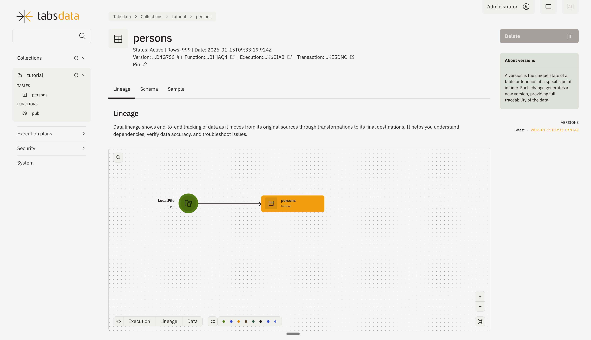
Step 1. Install Tabsdata
Note: The following tutorial is meant for CMD shell. You might need to adapt some commands if using PowerShell. You can use bash such as MinGW, CygWIn or Bash for Git, and follow the steps for Linux/macOS.
While not required, you should install the Tabsdata Python package in a clean virtual environment. You can use python venv, conda or other similar tools to create and manage your virtual environment.
The commands in this tutorial assume that the user is running the tabsdata server in the same machine as the one in which doing the tutorial.
Important: The virtual environment or alternative installation location must have Python 3.12 or later.
[Optional and Recommended] Setup virtual environment
$ conda create --name tabsdata_env python=3.12
$ conda activate tabsdata_env
$ python3.12 -m venv .venv
$ source .venv/bin/activate # On Linux/Mac
$ .\.venv\Scripts\activate # On Windows
To install Tabsdata, run the following command in your command line interface (CLI):
$ pip install tabsdata
Tabsdata installation can be done as an ‘all’ installation or as an ‘only what you need’ installation.
The ‘full’ instalation installs all Tabsdata and the third party libraries for all Tabsdata connectors. The ‘only what you need’ installation installs all Tabsdata but none of the third party connectors. This is done for two reasons, one is to keep the packages small. And second, some third party libraries require the users to accept their terms.
The ‘full’ installation is done with the command pip install 'tabsdata[all]'. The ‘only what you need’ installation is done using the command pip install tabsdata followed by installations for specific components, for example pip install 'tabsdata[salesforce]'.
Step 2. Start the Server
In case you have started the Tabsdata server earlier, it is suggested that you remove the older Tabsdata instance. This enables you to start from scratch, reducing the possibilities of error or conflicts.
1. Clearing the old Tabsdata instance
[Applicable only if you have started a Tabsdata server before]
Run the following commands in your CLI, to stop the Tabsdata server and clear the instance:
$ tdserver stop
$ tdserver clean
$ tdserver delete
2. Starting the server
To start the Tabsdata server, use the following command:
$ tdserver start
The command will run until all the required components are running. You can also stop the monitoring and check the status using the command below.
To verify that the Tabsdata server instance is running:
$ tdserver status
Output:
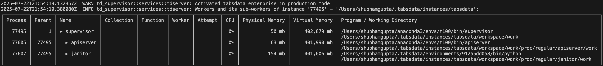
Step 3. Setup Tutorial
To setup the tutorial run the following commands in your CLI from your desired directory.
The td examples --dir examples command creates the examples directory, input and output directories and create the function configuration files called publisher.py, tranformer.py, and subscriber.py for the tutorial. This step is needed only in the context of this tutorial. You can choose a different setup for your own projects. The --dir flag specifies the directory where the examples will be created. You can change the directory name to your preference.
$ td examples --dir examples
$ cd examples/example-000
Step 4. Log in and Create a Collection
Collections are logical containers for Tabsdata tables and functions. You use collections to enable different business domains to have their own organizational space.
Using CLI
Use the following steps to create a collection for the tutorial.
If you are not logged in, use the following command to log in to Tabsdata:
$ td login --server localhost --user admin --role sys_admin --password tabsdata
To create a collection called tutorial, run the following command:
$ td collection create --name tutorial
Using UI
You can create a collection through the Tabsdata UI as well.
1. Open the URL
http://localhost:2457
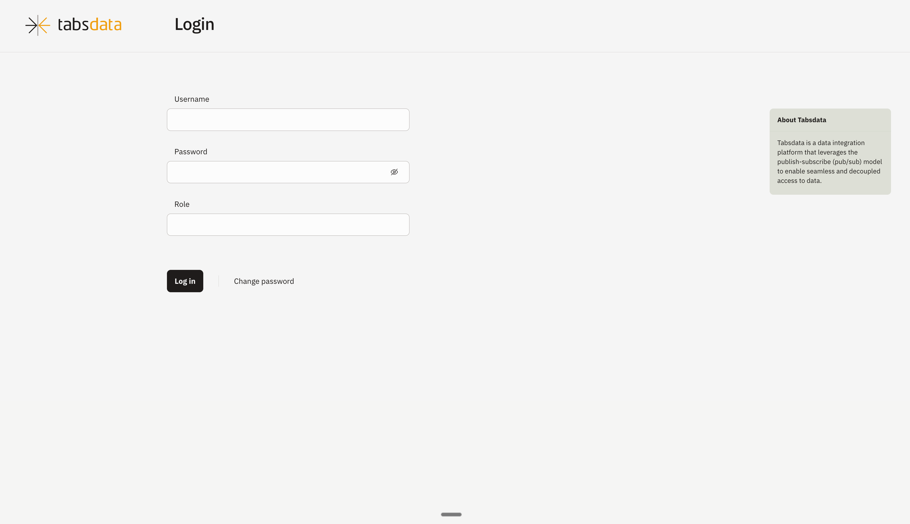
2. Credentials to login
Username
admin
Password:
tabsdata
Role
sys_admin
3. Create the collection
The collection page will open up by default. Click on “Create Collection” in the top right
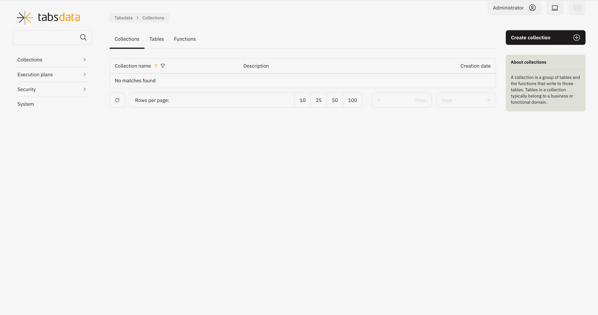
Fill out the name and description (optional). Click on “Create” in the top right.
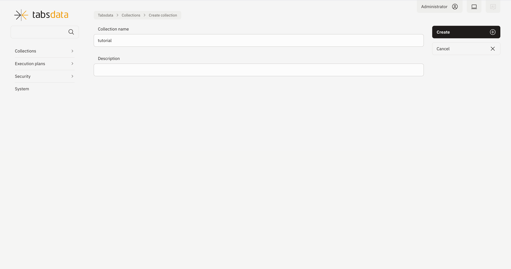
Collection is created.
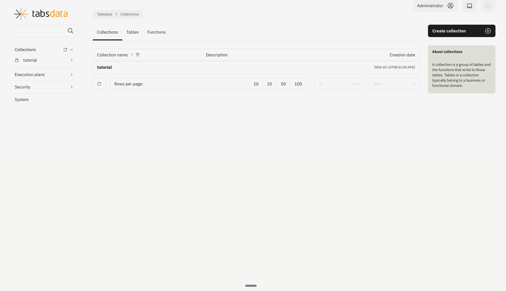
Now that you have created a collection, you’re ready to implement a publisher.
Step 5. Implement a Publisher
Publishers import data from external systems such as local file systems, databases, and cloud storage, and publish the data as tables in the Tabsdata server.
Use the following steps to create a publisher that reads the sample data from local system, register the publisher in the tutorial collection, and manually trigger the publisher to execute.
1. Define the publisher
In the publisher.py file in your examples directory, the following code is used to define a publisher.
import os
import tabsdata as td
@td.publisher(
source = td.LocalFileSource(os.path.join(os.getcwd(), "input", "persons.csv")),
tables = ["persons"]
)
def pub(persons: td.TableFrame):
return persons
This publisher, named pub, reads the “persons.csv” file in the input folder and writes it to the Tabsdata server as a table called persons.
You can configure publishers to read data from many external systems. For details, Publishers.
2. Register the publisher
Before you execute a publisher, you need to register it with a collection. Publishers write all of their output tables to the collection that they are registered with.
Use the following command to register your pub publisher with the tutorial collection:
$ td fn register --coll tutorial --path publisher.py::pub
3. Execute the publisher
Use the following command to manually trigger the publisher to execute:
Using CLI
$ td fn trigger --coll tutorial --name pub
The command triggers the function and polls the transaction status. Once successful, the polling returns the following transaction data:
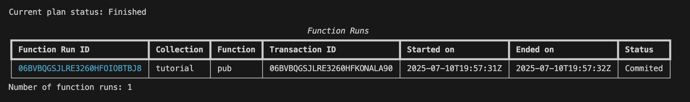
Using UI
Click on the collection name “tutorial” on the left hand side or from the collection list to open the view containing further details regarding the collection.
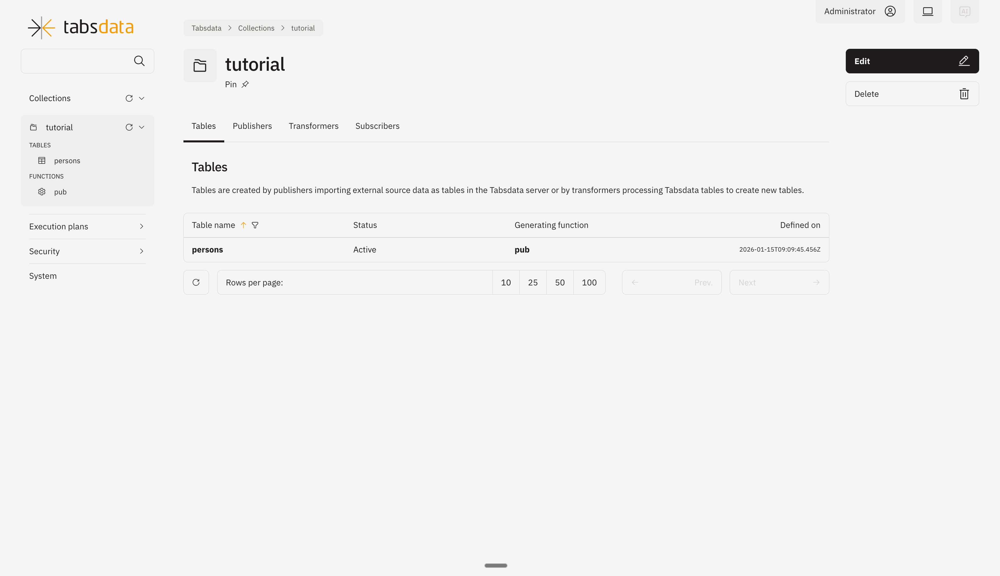
Click on “Publishers” to open the publishers registered in the collection.
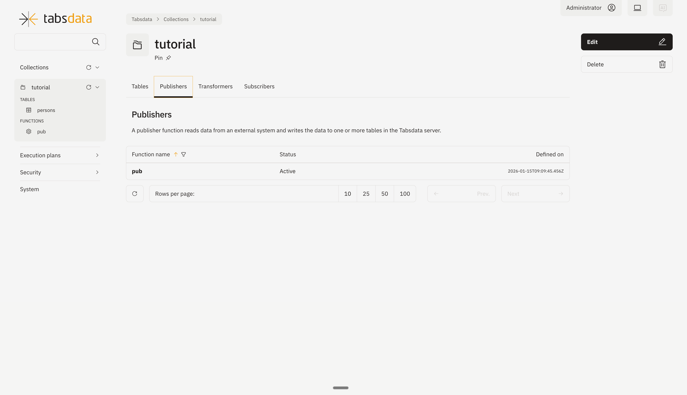
Open the publisher details by clicking on “pub” in the list. Click on trigger on the top right to trigger the execution of the publisher.
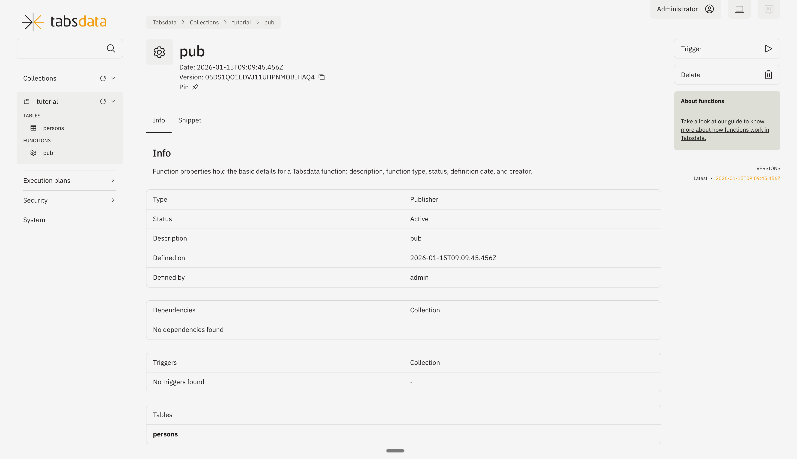
You can monitor the status of trigger through this diagram.
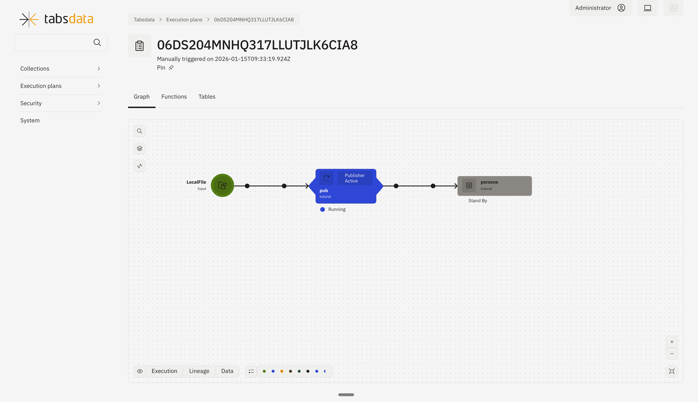
4. View the new persons Tabsdata table
Using CLI
To view the schema of the new persons table, run the following command:
$ td table schema --coll tutorial --name persons
The results should look like this:
{kind=link}
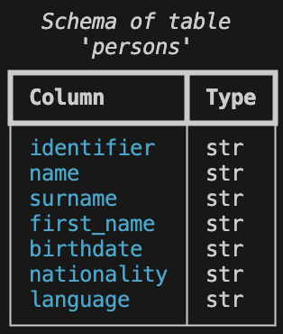
To view the data in the table, use the following command:
$ td table sample --coll tutorial --name persons
The results should look like this:
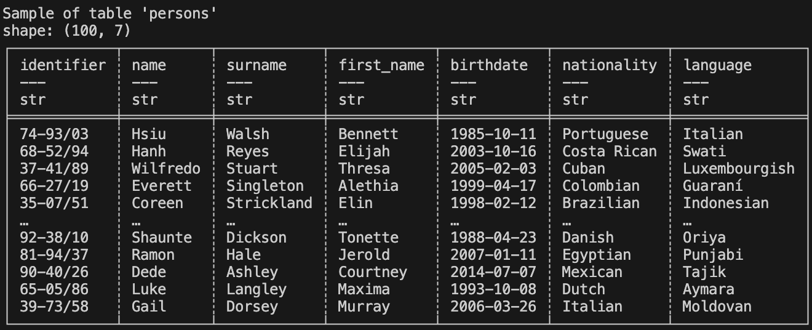
Using UI
You can access the tables by clicking on the collection name “tutorial” from the left panel. You will see the list of tables contained in the collection.
You can check the table details by clicking on “persons” from the list.
You can check the sample data and run various SQL queries by clicking on the “Sample” tab.
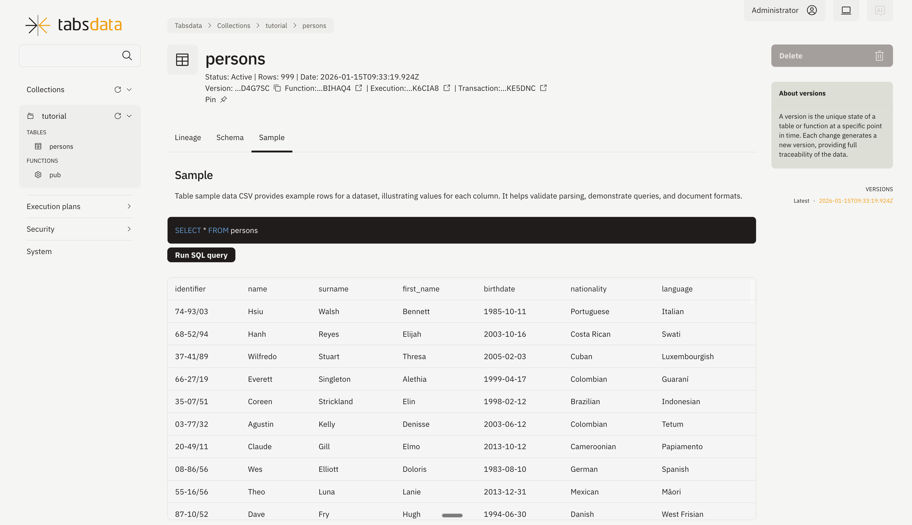
Now that you have successfully defined, registered, and executed a publisher, you’re ready to do the same for a transformer.
Step 6. Implement a Transformer
Transformers modify tables inside the Tabsdata server. They can read from one or more Tabsdata tables, transform the data, and write to new Tabsdata tables.
Use the following steps to create a transformer that modifies the tutorial data and writes the results to new tables, register the transformer with the tutorial collection, and manually trigger the transformer to execute.
1. Define a transformer
In the transformer.py file in your examples directory, the following code defines a transformer.
import tabsdata as td
@td.transformer(
input_tables=["persons"],
output_tables=["spanish", "french", "german"]
)
def tfr(persons: td.TableFrame):
persons = persons.select(["identifier", "name", "surname", "nationality", "language"])
res = {}
for nationality in ["Spanish", "French", "German"]:
res[nationality] = persons.filter(td.col("nationality").eq(nationality)).drop(["nationality"])
return res["Spanish"], res["French"], res["German"]
This transformer, named tfr, reads data from the persons Tabsdata table, transforms it, and writes the results to three output tables. The transformer performs the following processing:
Selects specific columns, omitting the other columns from the data
Filters data by nationality
Writes country-specific data to the appropriate table
Since no trigger is explicitly defined, the transformer is triggered by a commit to the specified input table: persons. You can use a trigger_by command to define different trigger tables or to prevent automated triggering. For more information, see Working with Triggers.
You can configure transformers to perform a range of operations. For details, see Transformers.
2. Register the transformer with a Tabsdata collection
Before you execute a transformer, you need to register it with a collection. Transformers can read data from any Tabsdata collection. And like publishers, they write all of their output tables to the collection that they are registered with.
Use the following command to register the tfr transformer with the tutorial collection:
$ td fn register --coll tutorial --path transformer.py::tfr
3. Execute the transformer
Using CLI
Use the trigger command to manually trigger the transformer to execute. The command syntax is the same for all Tabsdata functions:
$ td fn trigger --coll tutorial --name tfr
The command triggers the function and polls the transaction status. Once successful, the polling returns the transaction data such as the following:
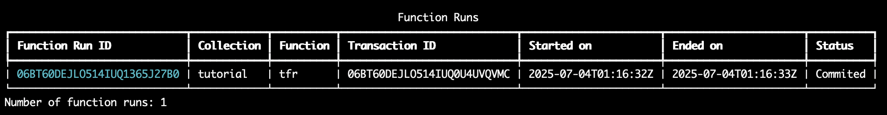
Using UI
You can also use UI to trigger the transformer in the same way as shown for publisher here.
If you face any issues, make sure to check out the Troubleshooting guide.
4. View the output tables
Using CLI
To view the schema of the spanish output table, run the following command:
$ td table schema --coll tutorial --name spanish
The results should look like this:
{kind=link}
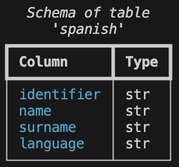
If you like, you can use the command to check the schema for all of the new tables.
To view the data in the table, use the following command:
$ td table sample --coll tutorial --name spanish
The results should look like this:
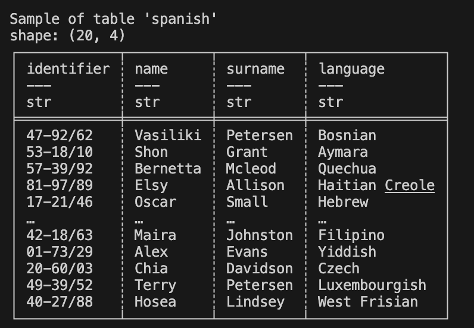
Using UI
You can also use UI to view the sample table data as shown here.
Now that you have implemented a transformer, it’s time to work with a subscriber….
Step 7. Implement a Subscriber
Subscribers export tables from the Tabsdata server to external systems such as local systems, databases, and cloud storage. Use subscribers to provide prepared data to data consumer teams.
Use the following steps to create a subscriber that exports the tutorial tables, register the subscriber with the tutorial collection, and manually trigger the subscriber to execute.
1. Define a subscriber
In the subscriber.py file in your examples directory, the following code defines a subscriber.
import os
import tabsdata as td
@td.subscriber(
["spanish", "french"],
td.LocalFileDestination(
[
os.path.join(os.getcwd(), "output", "spanish.jsonl"),
os.path.join(os.getcwd(), "output", "french.jsonl")
]
)
)
def sub(spanish: td.TableFrame, french: td.TableFrame) -> (td.TableFrame, td.TableFrame):
return spanish, french
This subscriber, named sub, reads data from the spanish and french tables in the Tabsdata server and writes the output files spanish.json1 and french.ndjson to the output folder in the examples directory.
Since no trigger is explicitly defined, the subscriber is triggered by a commit to any of the specified input tables: spanish or french. You can use a trigger_by command to define different trigger tables or to prevent automated triggering.
You can configure subscribers to export data to many external systems. For details, see Working with Triggers.
2. Register the subscriber
Before you execute a subscriber, you need to register it with a collection. Subscribers can read data from any Tabsdata collection.
Use the following command to register the sub subscriber with the tutorial collection:
$ td fn register --coll tutorial --path subscriber.py::sub
3. Execute the subscriber
Using CLI
Use the trigger command to manually trigger the subscriber:
$ td fn trigger --coll tutorial --name sub
The command triggers the function and polls the transaction status. Once successful, the polling returns the transaction data such as the following:
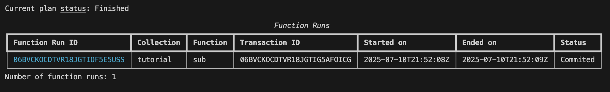
If you face any issues, make sure to check out the Troubleshooting guide.
Using UI
You can also use UI to trigger the subscriber in the same way as shown for publisher here.
4. Verify subscriber execution
You can verify that the spanish.json1 and french.ndjson output files have been created by listing files in the output directory:
$ ls output
$ dir output
You can use your favorite editor to view the contents of the files.
Step 8. Initiate Automated Triggers
So far, you have used manual triggers to execute the functions in this tutorial.
As mentioned earlier, transformer and subscriber functions have default automated triggers: when a trigger is not explicitly defined, the input tables for the function act as trigger tables. Publishers do not include a default trigger like transformers and subscribers, but you can define them when needed. For more information, see Working with Triggers.
Since the tutorial transformer does not have a specified trigger, it is triggered by a commit to its input table, persons. Similarly, since the tutorial subscriber does not have a specified trigger, it is triggered by a commit to either of its input tables: french or spanish.
So when the tutorial publisher executes, it writes to the persons table and creates a commit to that table. The commit to the persons table automatically triggers the transformer. The transformer processes the data and generates commits to the french and spanish tables. This automatically triggers the subscriber, which exports the data to files in the output directory. As a result, the manual execution of the tutorial publisher results in the automatic processing of the data and the writing of the desired output files.
To see this in action, clear the output folder and test the automated triggers for this tutorial:
1. Remove the existing files from the output directory
You can do this manually or by running the following command:
$ rm output/*
$ del output\*
2. Execute the publisher
Using CLI
To run the entire tutorial workflow, use the following command to manually trigger the publisher:
$ td fn trigger --coll tutorial --name pub
Using UI
You can also use UI to trigger the publisher as shown here.
4. Verify the output
You can verify that the spanish.json1 and french.ndjson files have been written to the output folder with the following command:
$ ls output
$ dir output
And you can once again check the contents of those files with your favorite editor.
Step 9. Check the lineage graph
You can check the lienage graph in the Tabsdata browser UI. You can see more details on User Interface.
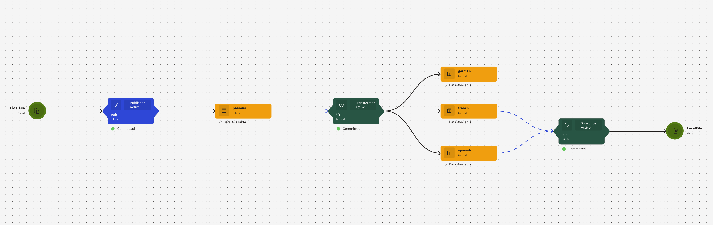
To check the graph:
1. Open the execution graphs.
On the left dropdown, select ‘Finished’ used ‘Execution Plans’.
2. Click on the execution plan.
Click on the first one to open the latest linegae graph with all functions and tables.
Next Steps
Congratulations on working with Tabsdata functions and creating an automated workflow!
Here are some suggestions for your next steps:
For a broader understanding of Tabsdata, see Key Concepts.
Learn more about defining publishers, transformers, and subscribers.
Dive deeper into the processing that you can do with transformers here.
Want to access an external system that does not have built-in support? You can build your own connector plugins.
If you run into problems, check out our Troubleshooting chapter.